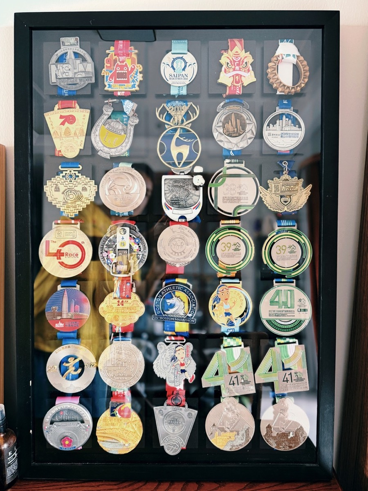
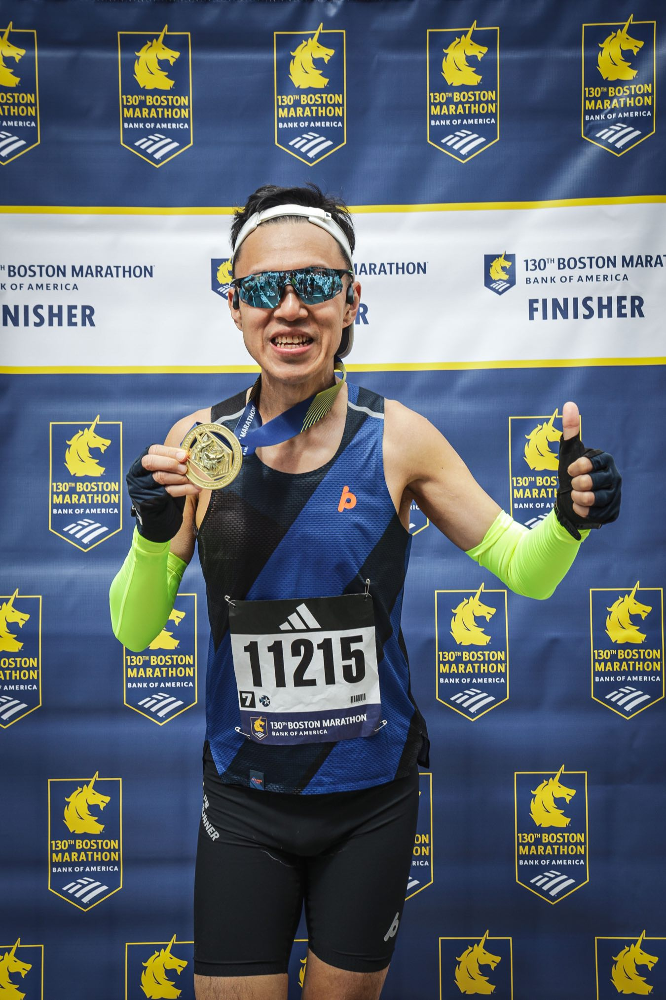
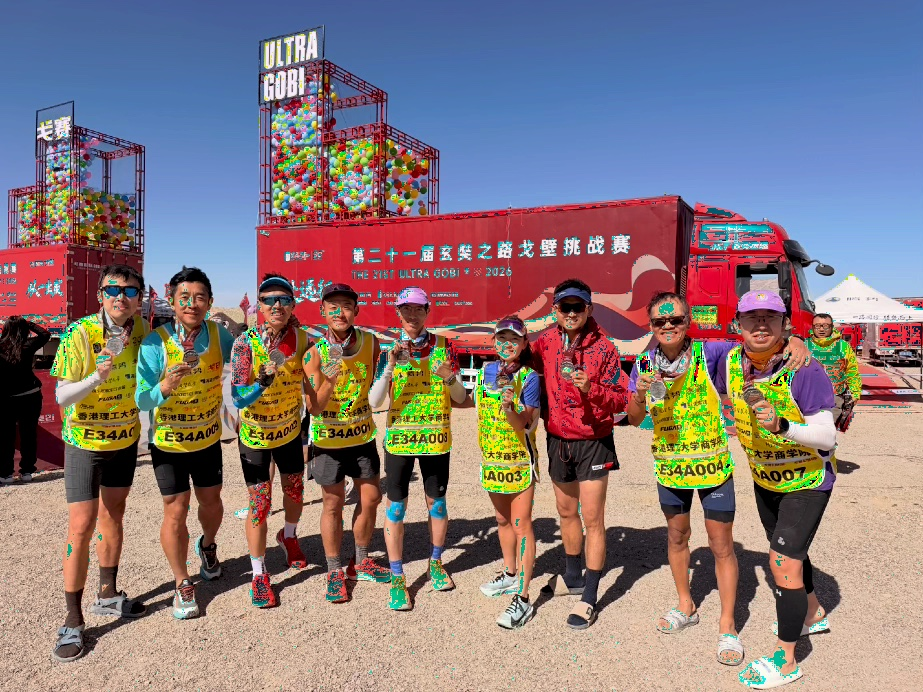

CAPE TOWN · MAY 2026 · THE EIGHTH MAJOR STAR
Ten years.
From two kilometres
to eight majors.
From a two-kilometre first run in 2016 to eight majors and a 3:05:30 best in Seoul.
- Major events
- 8
- Six-major rounds
- 2
- Personal best
- 3:05:30
Marathon milestones
Races, results and training as of November 2026.
- Major marathon eventsEight major events completed worldwide8
- Six-major roundsTwo complete rounds of the six majors2 rounds
- Full marathonsNearly 50 races completedNearly 50
- Personal bestSeoul, South Korea, March 20263:05:30
- Monthly distanceCurrent sustained training range350–450 km

I have never seen Shenzhen at night, yet I have run all eight World Marathon Majors
— From 200 jin to eight stars: my ten years of running
I have lived in Shenzhen for years but have rarely seen the city at night. My life has stayed simple: early to bed, early to rise, running and work.
In 2016, I weighed about 100 kilograms, sat in an office all day and hardly exercised. In May 2026, I completed my eighth World Marathon Major star in Cape Town.
More precious than the eight stars is the rhythm and change that running has built, little by little, over ten years.

1–4 October 2026 · 121 km in four days
Go21 Gobi Challenge
— Into the desert with a dream
The dust of Go21 has finally settled. Months of focused preparation and four days of extreme racing across 121 kilometres have become a permanent memory. Looking back on this once-in-a-lifetime run with the A Team, my heart is still racing.
People imagine that a great journey must be filled with dramatic stories. Only after crossing this desert did I realise how quickly those four days and three nights passed. There was no time to savour them before they became our own legend.
It all began at an ordinary gathering late last year. Through my old mountaineering friend Lao Pang, I met a group of exceptional runners and trail athletes. Team leader Yu asked me directly: “Would you like to run the Gobi Challenge?” The passion inside me was instantly lit. I agreed without hesitation. A marathon was already familiar territory, but four consecutive days and 121 kilometres through a harsh desert would be an entirely new test.

Training rhythm
The first run in 2016 was two kilometres. In 2026, Seoul brought a 3:05:30 marathon. I now maintain 350–450 kilometres a month.